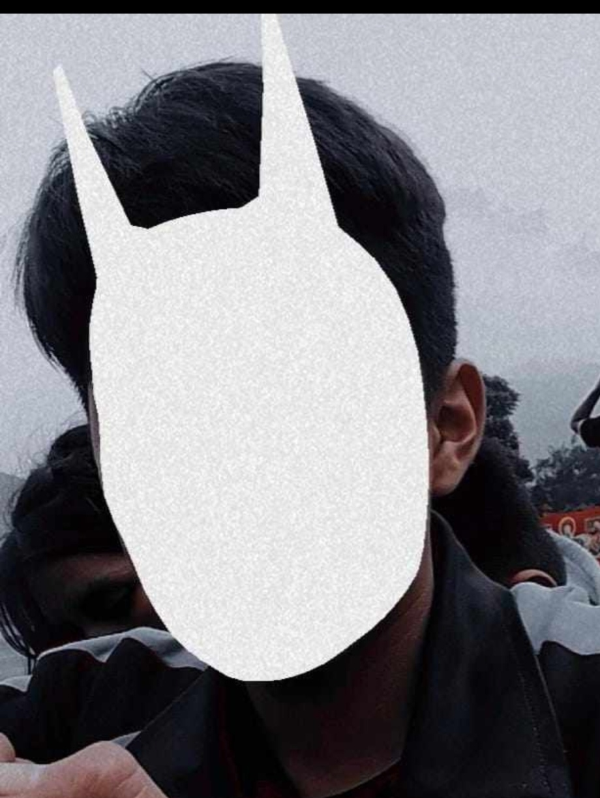
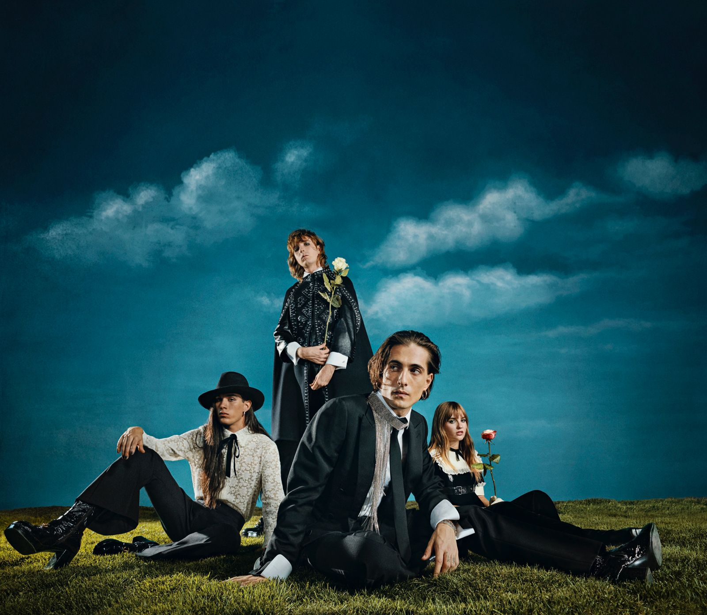

Banda Musical Måneskin

Andres
Cardenas
Måneskin comenzó tocando en las calles de Roma antes de convertirse en una de las bandas de rock más populares del mundo. Su estilo combina glam rock, hard rock y una estética rebelde que llamó la atención de millones de personas.

La banda está formada por Damiano David (vocalista), Victoria De Angelis (bajista), Thomas Raggi (guitarrista) y Ethan Torchio (baterista). En 2017 participaron en X Factor Italia y poco tiempo después lograron fama internacional gracias a su música y presencia en el escenario.
Måneskin destaca por su autenticidad, su energía en vivo y su estilo diferente. Actualmente son considerados una de las bandas más influyentes del rock moder
Uno de sus mayores éxitos llegó en 2021 cuando ganaron Eurovisión con la canción “Zitti e buoni”. Desde entonces, canciones como “Beggin” y “I Wanna Be Your Slave” acumularon millones de reproducciones y ayudaron a que el rock volviera a ser tendencia entre los jóvenes.
En conclusión, Måneskin es mucho más que una banda de rock italiana: es un símbolo de autenticidad, rebeldía y libertad creativa. Han pasado de tocar en las calles de Roma a conquistar escenarios internacionales, llevando un mensaje de autoexpresión y ruptura de estereotipos. Su música, que combina fuerza y vulnerabilidad, junto con su imagen provocadora, ha revitalizado el rock para una nueva generación y los ha convertido en un fenómeno cultural global.